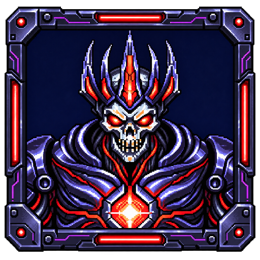
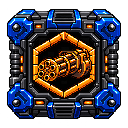
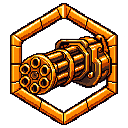
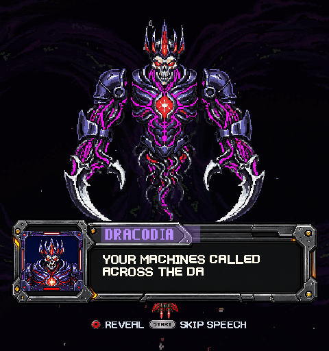
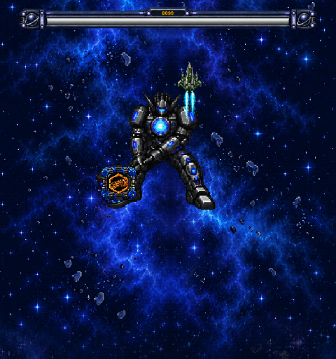
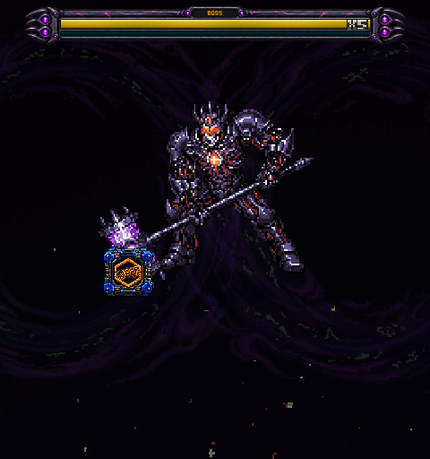

Dracodia & Hammer — revised assets
Dracodia has an integrated four-sided communicator bezel with red indicators and violet chromium armor. Both Hammer versions use their own chaingun pickup crate and matching numeral-free weapon emblem.
Dracodia portrait box

Exclusive chaingun crate

Released powerup icon

Actual dialogue

Stage 5 Hammer

Dracodia Hammer form

27 native Edge checks passed, including both Hammer versions on all four difficulties. Pickup timing, sounds, weapon level and combat behavior remain with their existing owners.
Play the game